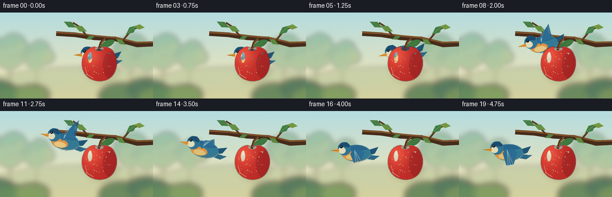
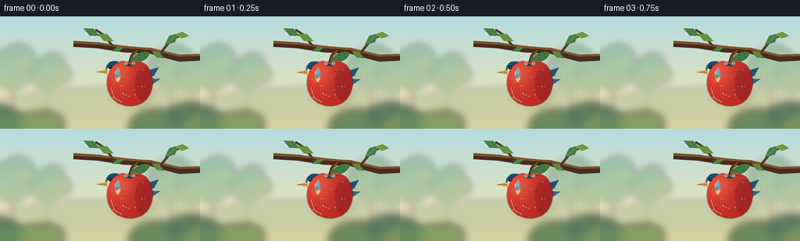

CODING AGENTS AS PIXEL WORLD MODELS
traex/GPT-5.6-Sol · dynamic_spatial_relationship_0037
点击播放 · 原生 RGB 像素
逐轮保存的候选
回放视频、检查图与代码变化。
每份候选均可单独播放。实际图片检查记录在下方工具轨迹中。
候选 01播放与检查图
点击播放 · 原生 RGB 像素

展开代码变化
--- 上一保存版本
+++ 本次保存版本
@@ -0,0 +1,286 @@
+from pathlib import Path
+import math
+import numpy as np
+from PIL import Image, ImageDraw, ImageFilter
+from artifact_io import save
+
+# Procedural, hand-illustrated scene. Everything is rendered at 4x resolution
+# and downsampled for clean edges.
+W, H, N, S = 256, 144, 20, 4
+RW, RH = W*S, H*S
+rng = np.random.default_rng(3701)
+
+def sc(v):
+ return int(round(v*S))
+
+def pts(seq):
+ return [(sc(x), sc(y)) for x, y in seq]
+
+def ellipse(draw, box, fill, outline=None, width=1):
+ draw.ellipse(tuple(sc(x) for x in box), fill=fill, outline=outline, width=sc(width) if outline else 1)
+
+def line(draw, seq, fill, width=1, joint='curve'):
+ draw.line(pts(seq), fill=fill, width=sc(width), joint=joint)
+
+def catmull_rom(points, samples=12, closed=True):
+ p = [np.array(q, float) for q in points]
+ out=[]
+ n=len(p)
+ segs=n if closed else n-1
+ for i in range(segs):
+ p0=p[(i-1)%n] if closed else p[max(0,i-1)]
+ p1=p[i]
+ p2=p[(i+1)%n]
+ p3=p[(i+2)%n] if closed else p[min(n-1,i+2)]
+ for j in range(samples):
+ t=j/samples; t2=t*t; t3=t2*t
+ q=.5*((2*p1)+(-p0+p2)*t+(2*p0-5*p1+4*p2-p3)*t2+(-p0+3*p1-3*p2+p3)*t3)
+ out.append(tuple(q))
+ return out
+
+def make_background():
+ # luminous late-summer sky
+ y=np.linspace(0,1,RH)[:,None,None]
+ top=np.array([180,220,224.],float)[None,None,:]
+ bot=np.array([248,229,175.],float)[None,None,:]
+ arr=np.repeat(top*(1-y)+bot*y, RW, axis=1)
+ # very gentle paper-like grain (fixed across frames)
+ grain=rng.normal(0,1.25,(RH,RW,1))
+ arr=np.clip(arr+grain,0,255).astype(np.uint8)
+ bg=Image.fromarray(arr,'RGB')
+
+ # Defocused distant orchard, painted on separate layer
+ far=Image.new('RGBA',(RW,RH),(0,0,0,0)); d=ImageDraw.Draw(far,'RGBA')
+ # distant rolling ground
+ d.ellipse((sc(-60),sc(91),sc(330),sc(209)), fill=(125,158,105,65))
+ d.ellipse((sc(-90),sc(107),sc(180),sc(190)), fill=(82,137,100,55))
+ for tx,ty,scale in [(18,67,1.0),(62,73,.75),(220,67,.95),(247,76,.72)]:
+ d.line([(sc(tx),sc(ty)),(sc(tx-2),sc(130))],fill=(91,77,49,95),width=sc(4*scale))
+ for ox,oy,rr,col in [(-13,-5,19,(74,134,91,92)),(5,-10,22,(73,145,92,90)),(17,1,16,(120,159,83,88)),(-2,8,20,(91,151,91,85))]:
+ d.ellipse((sc(tx+ox-rr*scale),sc(ty+oy-rr*scale),sc(tx+ox+rr*scale),sc(ty+oy+rr*scale)),fill=col)
+ for ox,oy in [(-9,-7),(8,-13),(14,4),(-1,8)]:
+ r=1.8*scale
+ d.ellipse((sc(tx+ox-r),sc(ty+oy-r),sc(tx+ox+r),sc(ty+oy+r)),fill=(192,63,42,120))
+ far=far.filter(ImageFilter.GaussianBlur(sc(4.2)))
+ bg=Image.alpha_composite(bg.convert('RGBA'),far)
+
+ # nearby soft foliage framing the lower edge
+ fol=Image.new('RGBA',(RW,RH),(0,0,0,0)); fd=ImageDraw.Draw(fol,'RGBA')
+ blobs=[(-8,132,34,(43,93,69,180)),(23,141,31,(66,116,70,190)),(54,137,28,(93,134,67,170)),
+ (204,140,38,(63,108,67,180)),(243,129,32,(48,94,72,190)),(266,144,35,(79,120,65,180))]
+ for x0,y0,r,c in blobs:
+ fd.ellipse((sc(x0-r),sc(y0-r*.56),sc(x0+r),sc(y0+r*.56)),fill=c)
+ fol=fol.filter(ImageFilter.GaussianBlur(sc(5)))
+ bg=Image.alpha_composite(bg,fol)
+
+ # foreground branch and leaves, kept sharp
+ fg=Image.new('RGBA',(RW,RH),(0,0,0,0)); q=ImageDraw.Draw(fg,'RGBA')
+ line(q,[(94,35),(126,37),(158,42),(193,44),(229,54),(267,52)],(70,44,27,255),8)
+ line(q,[(94,33),(129,35),(161,39),(195,42),(229,50),(267,49)],(128,82,42,255),3)
+ line(q,[(145,39),(133,24),(122,17)],(91,58,31,255),3)
+ line(q,[(206,46),(220,29),(232,24)],(92,58,31,255),3)
+ # Leaves as rotated almond polygons
+ def leaf(cx,cy,ang,l,wid,color):
+ ca,sa=math.cos(ang),math.sin(ang)
+ local=[(-l/2,0),(0,-wid/2),(l/2,0),(0,wid/2)]
+ pp=[]
+ for x,y in local: pp.append((cx+x*ca-y*sa,cy+x*sa+y*ca))
+ q.polygon(pts(pp),fill=color)
+ line(q,[(cx-l*.35*ca,cy-l*.35*sa),(cx+l*.38*ca,cy+l*.38*sa)],(72,107,55,180),.7)
+ leaf(117,20,-2.7,23,10,(67,124,65,255)); leaf(135,27,.42,22,10,(100,145,63,255))
+ leaf(220,29,-.7,24,11,(67,126,66,255)); leaf(233,24,.1,18,9,(117,153,62,255))
+ leaf(202,49,.55,19,8,(91,137,57,255)); leaf(151,42,2.8,16,7,(77,124,60,255))
+ return Image.alpha_composite(bg,fg)
+
+BACKGROUND=make_background()
+
+# Fixed subtle speckles used on apple; generated once so they do not flicker.
+APPLE_SPECKLES=[(rng.uniform(143,188),rng.uniform(67,105),rng.uniform(.25,.65),rng.uniform(.09,.23)) for _ in range(38)]
+
+def draw_leaf(draw,cx,cy,ang,l,wid,fill):
+ ca,sa=math.cos(ang),math.sin(ang)
+ p=[]
+ # smooth pointed oval
+ for k in range(32):
+ a=2*math.pi*k/32
+ lx=(l/2)*math.cos(a); ly=(wid/2)*math.sin(a)
+ # pointier than an ellipse
+ ly*=.65+.35*abs(math.sin(a))
+ p.append((cx+lx*ca-ly*sa,cy+lx*sa+ly*ca))
+ draw.polygon(pts(p),fill=fill)
+
+def transform(cx,cy,ang,x,y):
+ ca,sa=math.cos(ang),math.sin(ang)
+ return (cx+x*ca-y*sa, cy+x*sa+y*ca)
+
+def poly_local(draw,cx,cy,ang,p,fill):
+ draw.polygon(pts([transform(cx,cy,ang,x,y) for x,y in p]),fill=fill)
+
+def oval_poly(cx,cy,ang,ox,oy,rx,ry,n=48):
+ return [transform(cx,cy,ang,ox+rx*math.cos(2*math.pi*k/n),oy+ry*math.sin(2*math.pi*k/n)) for k in range(n)]
+
+def draw_bird(layer,cx,cy,frame,moving,angle=0):
+ """A small blue/orange songbird facing left, with animated wings."""
+ d=ImageDraw.Draw(layer,'RGBA')
+ # Motion streaks trail to the right only during the actual flight.
+ if moving:
+ speed = 1.0 if 6 <= frame <= 13 else .5
+ for j,(dy,L) in enumerate([(-8,13),(4,18),(11,10)]):
+ x1,y1=transform(cx,cy,angle,22+5*j,dy)
+ x2,y2=transform(cx,cy,angle,22+L+5*j,dy)
+ line(d,[(x1,y1),(x2,y2)],(71,123,145,int(62*speed)),1.0)
+
+ # two tail feathers, toward the right
+ poly_local(d,cx,cy,angle,[(14,-3),(37,-10),(31,1),(13,8)],(31,84,116,255))
+ poly_local(d,cx,cy,angle,[(13,3),(39,5),(29,12),(10,9)],(45,103,132,255))
+ line(d,[transform(cx,cy,angle,18,1),transform(cx,cy,angle,34,5)],(149,193,190,170),.7)
+
+ phase=math.sin(frame*math.pi*.78)
+ if not moving: phase=.18*math.sin(frame*.9)-.28
+ tip_y=-9-27*phase
+ # far wing first, slightly translucent
+ farwing=[(7,-4),(16,-7),(12+4*phase,tip_y-4),(-2,-12),(-8,-3)]
+ poly_local(d,cx,cy,angle,farwing,(33,91,128,205))
+ # far wing feather divisions
+ for j in range(3):
+ p1=transform(cx,cy,angle,5+j*2,-7)
+ p2=transform(cx,cy,angle,10+j*1.5,tip_y+3+j*2)
+ line(d,[p1,p2],(23,65,101,135),.65)
+
+ # body shadow, body, and warm breast patch
+ d.polygon(pts(oval_poly(cx,cy+1.2,angle,0,0,24,13.5)),fill=(20,65,92,110))
+ d.polygon(pts(oval_poly(cx,cy,angle,0,0,24,13.5)),fill=(52,121,148,255))
+ # blue back cap along upper body
+ d.polygon(pts([transform(cx,cy,angle,x,y) for x,y in [(-20,-5),(-10,-12),(7,-13),(20,-6),(10,-4),(-7,-4)]]),fill=(39,101,139,255))
+ d.polygon(pts(oval_poly(cx,cy,angle,-8,5,14,7.2)),fill=(221,145,67,255))
+ d.polygon(pts(oval_poly(cx,cy,angle,-7,7,10,4.7)),fill=(239,187,97,180))
+
+ # near wing: its silhouette changes clearly as it flaps
+ if phase > -.05:
+ wing=[(5,-7),(13,-5),(11,tip_y),(-1,-15),(-9,-6),(-5,0)]
+ else:
+ wing=[(7,-5),(14,0),(8,10-23*phase),(-4,15-16*phase),(-10,2),(-6,-5)]
+ poly_local(d,cx,cy,angle,wing,(42,108,148,255))
+ # feather highlights
+ root=transform(cx,cy,angle,-3,-4)
+ for j in range(3):
+ tip=transform(cx,cy,angle,7-j*4,(tip_y if phase>-.05 else 10-22*phase)+j*2)
+ line(d,[root,tip],(113,170,183,150),.8)
+
+ # head, pale cheek, cap
+ hx,hy=transform(cx,cy,angle,-20,-7)
+ ellipse(d,(hx-11,hy-11,hx+11,hy+11),(48,116,145,255))
+ # dark cap
+ cap=[transform(cx,cy,angle,x,y) for x,y in [(-30,-10),(-25,-17),(-16,-18),(-10,-12),(-13,-9),(-22,-11)]]
+ d.polygon(pts(cap),fill=(28,77,112,255))
+ cheek=transform(cx,cy,angle,-24,-4)
+ ellipse(d,(cheek[0]-6.2,cheek[1]-5.4,cheek[0]+6.2,cheek[1]+5.4),(222,219,187,255))
+ # eye and pinpoint
+ ex,ey=transform(cx,cy,angle,-25,-10)
+ ellipse(d,(ex-2.25,ey-2.25,ex+2.25,ey+2.25),(18,22,22,255))
+ ellipse(d,(ex-.7,ey-1.1,ex+.25,ey-.15),(255,255,245,255))
+ # pointed ochre beak on left
+ poly_local(d,cx,cy,angle,[(-29,-7),(-43,-4),(-29,-1)],(225,151,49,255))
+ line(d,[transform(cx,cy,angle,-42,-4),transform(cx,cy,angle,-29,-4)],(112,70,27,230),.55)
+ # tucked feet
+ for ox in [0,7]:
+ p1=transform(cx,cy,angle,ox,10); p2=transform(cx,cy,angle,ox-1,15)
+ line(d,[p1,p2],(126,82,43,220),.75)
+ line(d,[p2,transform(cx,cy,angle,ox-4,16)],(126,82,43,200),.55)
+
+
+def draw_apple_and_twig(layer):
+ d=ImageDraw.Draw(layer,'RGBA')
+ # stem and little leaf are behind the fruit but in front of the bird
+ line(d,[(165,63),(169,50),(176,43)],(80,49,25,255),4)
+ line(d,[(166,61),(170,50),(176,43)],(146,93,44,255),1.3)
+ draw_leaf(d,180,52,-.42,25,11,(62,119,61,255))
+ line(d,[(169,56),(190,48)],(46,91,48,190),.8)
+
+ anchors=[(166,60),(175,57),(187,62),(194,75),(195,89),(190,103),
+ (180,112),(166,115),(151,111),(141,101),(137,87),(139,73),(146,62),(157,57)]
+ ap=catmull_rom(anchors,12,True)
+ mask=Image.new('L',(RW,RH),0); md=ImageDraw.Draw(mask)
+ md.polygon(pts(ap),fill=255)
+ # dimensional crimson gradient
+ yy,xx=np.mgrid[0:RH,0:RW]; X=xx/S; Y=yy/S
+ light=np.exp(-(((X-153)/17)**2+((Y-72)/20)**2))
+ shade=np.clip((X-142)/60,0,1)*.32 + np.clip((Y-65)/70,0,1)*.16
+ base=np.zeros((RH,RW,4),dtype=np.uint8)
+ base[...,0]=np.clip(205+35*light-65*shade,0,255)
+ base[...,1]=np.clip(48+35*light-16*shade,0,255)
+ base[...,2]=np.clip(42+20*light-10*shade,0,255)
+ base[...,3]=np.asarray(mask)
+ apple=Image.fromarray(base,'RGBA')
+ # softly shade right edge inside mask
+ sh=Image.new('RGBA',(RW,RH),(0,0,0,0)); sd=ImageDraw.Draw(sh,'RGBA')
+ ellipse(sd,(172,65,199,111),(91,18,27,58))
+ sh.putalpha(Image.composite(sh.getchannel('A'),Image.new('L',(RW,RH),0),mask))
+ apple=Image.alpha_composite(apple,sh)
+ # skin details and highlight
+ ad=ImageDraw.Draw(apple,'RGBA')
+ for x,y,r,a in APPLE_SPECKLES:
+ ellipse(ad,(x-r,y-r,x+r,y+r),(255,195,125,int(255*a)))
+ ellipse(ad,(147,67,154,84),(255,225,188,70))
+ ellipse(ad,(149,66,153,75),(255,248,223,105))
+ # top indentation
+ ellipse(ad,(159,57,173,64),(91,31,28,90))
+ layer.alpha_composite(apple)
+ # crisp outline and reflected rim
+ d=ImageDraw.Draw(layer,'RGBA')
+ line(d,ap+[ap[0]],(111,33,31,150),1.0)
+ line(d,[(142,91),(146,104),(156,110)],(255,131,86,90),.8)
+
+
+def position(i):
+ if i <= 4:
+ # Hold long enough that the opening relation can be read.
+ return 166+.35*math.sin(i*.8), 75+.55*math.sin(i*.9), False, 0.0
+ if i <= 15:
+ u=(i-4)/11.0
+ e=u*u*(3-2*u)
+ x=166-82*e
+ y=75-23*math.sin(math.pi*u)-5*e
+ # slight nose-up orientation during climb, leveling out at the end
+ dy=-23*math.pi*math.cos(math.pi*u)/11-5/11
+ dx=-82*(6*u-6*u*u)/11
+ ang=max(-.20,min(.20,math.atan2(dy,abs(dx)+1e-6)))
+ return x,y,True,ang
+ # Hover clearly to the left in the final second.
+ j=i-16
+ return 84+1.0*math.sin(j*1.4),70+1.3*math.sin(j*1.7),False,0.0
+
+
+def render_frame(i):
+ scene=BACKGROUND.copy()
+ # Soft apple shadow cast into atmosphere/background for visual separation.
+ shadow=Image.new('RGBA',(RW,RH),(0,0,0,0)); sd=ImageDraw.Draw(shadow,'RGBA')
+ ellipse(sd,(141,66,199,119),(70,34,26,30))
+ shadow=shadow.filter(ImageFilter.GaussianBlur(sc(5)))
+ scene=Image.alpha_composite(scene,shadow)
+
+ # The bird is deliberately composited first. In opening frames the apple
+ # covers its torso, establishing that the bird is BEHIND the apple.
+ bird=Image.new('RGBA',(RW,RH),(0,0,0,0))
+ x,y,moving,ang=position(i)
+ draw_bird(bird,x,y,i,moving,ang)
+ scene=Image.alpha_composite(scene,bird)
+
+ fruit=Image.new('RGBA',(RW,RH),(0,0,0,0))
+ draw_apple_and_twig(fruit)
+ scene=Image.alpha_composite(scene,fruit)
+
+ # Sparse warm foreground bokeh gives a cinematic shallow-depth finish.
+ if i in (): # intentionally static scene; no random temporal flicker
+ pass
+ rgb=scene.convert('RGB').resize((W,H),Image.Resampling.LANCZOS)
+ return np.asarray(rgb,dtype=np.uint8)
+
+
+def main():
+ frames=np.stack([render_frame(i) for i in range(N)],axis=0)
+ assert frames.shape==(20,144,256,3) and frames.dtype==np.uint8
+ save(frames,Path(__file__).resolve().parent)
+
+if __name__=='__main__':
+ main()
候选 02播放与检查图
点击播放 · 原生 RGB 像素


展开代码变化
--- 上一保存版本
+++ 本次保存版本
@@ -47,7 +47,7 @@
# very gentle paper-like grain (fixed across frames)
grain=rng.normal(0,1.25,(RH,RW,1))
arr=np.clip(arr+grain,0,255).astype(np.uint8)
- bg=Image.fromarray(arr,'RGB')
+ bg=Image.fromarray(arr)
# Defocused distant orchard, painted on separate layer
far=Image.new('RGBA',(RW,RH),(0,0,0,0)); d=ImageDraw.Draw(far,'RGBA')
@@ -211,7 +211,7 @@
base[...,1]=np.clip(48+35*light-16*shade,0,255)
base[...,2]=np.clip(42+20*light-10*shade,0,255)
base[...,3]=np.asarray(mask)
- apple=Image.fromarray(base,'RGBA')
+ apple=Image.fromarray(base)
# softly shade right edge inside mask
sh=Image.new('RGBA',(RW,RH),(0,0,0,0)); sd=ImageDraw.Draw(sh,'RGBA')
ellipse(sd,(172,65,199,111),(91,18,27,58))
可观测工具轨迹
实际执行的命令与返回图片。
命令 1exit 0
/bin/bash -lc "cat prompt.txt && printf '\\n--- RULES ---\\n' && cat GENERATION_RULES.md && printf '\\n--- SPEC ---\\n' && cat task_spec.json"
命令 2exit 1
/bin/bash -lc "find . -maxdepth 2 -type f -printf '%p %s bytes\\n' | sort && printf '\\nTools:\\n' && command -v ffmpeg && command -v python3 && python3 - <<'PY' mods=['PIL','numpy','cv2','cairo','moviepy'] for m in mods: try: x=__import__(m); print(m,'OK',getattr(x,'__version__','')) except Exception as e: print(m,'NO',e) PY"
命令 3exit 0
/bin/bash -lc "cat artifact_io.py; printf '\\n--- tool availability ---\\n'; for x in ffmpeg python3; do command -v "'$x || true; done; python3 - <<'"'PY' mods=['PIL','numpy','cv2','cairo','moviepy'] for m in mods: try: x=__import__(m); print(m,'OK',getattr(x,'__version__','')) except Exception as e: print(m,'NO',e) PY fc-list | head -15 || true"
命令 4exit 0
/bin/bash -lc "cat > generate.py <<'PY'
from pathlib import Path
import math
import numpy as np
from PIL import Image, ImageDraw, ImageFilter
from artifact_io import save
# Procedural, hand-illustrated scene. Everything is rendered at 4x resolution
# and downsampled for clean edges.
W, H, N, S = 256, 144, 20, 4
RW, RH = W*S, H*S
rng = np.random.default_rng(3701)
def sc(v):
return int(round(v*S))
def pts(seq):
return [(sc(x), sc(y)) for x, y in seq]
def ellipse(draw, box, fill, outline=None, width=1):
draw.ellipse(tuple(sc(x) for x in box), fill=fill, outline=outline, width=sc(width) if outline else 1)
def line(draw, seq, fill, width=1, joint='curve'):
draw.line(pts(seq), fill=fill, width=sc(width), joint=joint)
def catmull_rom(points, samples=12, closed=True):
p = [np.array(q, float) for q in points]
out=[]
n=len(p)
segs=n if closed else n-1
for i in range(segs):
p0=p[(i-1)%n] if closed else p[max(0,i-1)]
p1=p[i]
p2=p[(i+1)%n]
p3=p[(i+2)%n] if closed else p[min(n-1,i+2)]
for j in range(samples):
t=j/samples; t2=t*t; t3=t2*t
q=.5*((2*p1)+(-p0+p2)*t+(2*p0-5*p1+4*p2-p3)*t2+(-p0+3*p1-3*p2+p3)*t3)
out.append(tuple(q))
return out
def make_background():
# luminous late-summer sky
y=np.linspace(0,1,RH)[:,None,None]
top=np.array([180,220,224.],float)[None,None,:]
bot=np.array([248,229,175.],float)[None,None,:]
arr=np.repeat(top*(1-y)+bot*y, RW, axis=1)
# very gentle paper-like grain (fixed across frames)
grain=rng.normal(0,1.25,(RH,RW,1))
arr=np.clip(arr+grain,0,255).astype(np.uint8)
bg=Image.fromarray(arr,'RGB')
# Defocused distant orchard, painted on separate layer
far=Image.new('RGBA',(RW,RH),(0,0,0,0)); d=ImageDraw.Draw(far,'RGBA')
# distant rolling ground
d.ellipse((sc(-60),sc(91),sc(330),sc(209)), fill=(125,158,105,65))
d.ellipse((sc(-90),sc(107),sc(180),sc(190)), fill=(82,137,100,55))
for tx,ty,scale in [(18,67,1.0),(62,73,.75),(220,67,.95),(247,76,.72)]:
d.line([(sc(tx),sc(ty)),(sc(tx-2),sc(130))],fill=(91,77,49,95),width=sc(4*scale))
for ox,oy,rr,col in [(-13,-5,19,(74,134,91,92)),(5,-10,22,(73,145,92,90)),(17,1,16,(120,159,83,88)),(-2,8,20,(91,151,91,85))]:
d.ellipse((sc(tx+ox-rr*scale),sc(ty+oy-rr*scale),sc(tx+ox+rr*scale),sc(ty+oy+rr*scale)),fill=col)
for ox,oy in [(-9,-7),(8,-13),(14,4),(-1,8)]:
r=1.8*scale
d.ellipse((sc(tx+ox-r),sc(ty+oy-r),sc(tx+ox+r),sc(ty+oy+r)),fill=(192,63,42,120))
far=far.filter(ImageFilter.GaussianBlur(sc(4.2)))
bg=Image.alpha_composite(bg.convert('RGBA'),far)
# nearby soft foliage framing the lower edge
fol=Image.new('RGBA',(RW,RH),(0,0,0,0)); fd=ImageDraw.Draw(fol,'RGBA')
blobs=[(-8,132,34,(43,93,69,180)),(23,141,31,(66,116,70,190)),(54,137,28,(93,134,67,170)),
(204,140,38,(63,108,67,180)),(243,129,32,(48,94,72,190)),(266,144,35,(79,120,65,180))]
for x0,y0,r,c in blobs:
fd.ellipse((sc(x0-r),sc(y0-r*.56),sc(x0+r),sc(y0+r*.56)),fill=c)
fol=fol.filter(ImageFilter.GaussianBlur(sc(5)))
bg=Image.alpha_composite(bg,fol)
# foreground branch and leaves, kept sharp
fg=Image.new('RGBA',(RW,RH),(0,0,0,0)); q=ImageDraw.Draw(fg,'RGBA')
line(q,[(94,35),(126,37),(158,42),(193,44),(229,54),(267,52)],(70,44,27,255),8)
line(q,[(94,33),(129,35),(161,39),(195,42),(229,50),(267,49)],(128,82,42,255),3)
line(q,[(145,39),(133,24),(122,17)],(91,58,31,255),3)
line(q,[(206,46),(220,29),(232,24)],(92,58,31,255),3)
# Leaves as rotated almond polygons
def leaf(cx,cy,ang,l,wid,color):
ca,sa=math.cos(ang),math.sin(ang)
local=[(-l/2,0),(0,-wid/2),(l/2,0),(0,wid/2)]
pp=[]
for x,y in local: pp.append((cx+x*ca-y*sa,cy+x*sa+y*ca))
q.polygon(pts(pp),fill=color)
line(q,[(cx-l*.35*ca,cy-l*.35*sa),(cx+l*.38*ca,cy+l*.38*sa)],(72,107,55,180),.7)
leaf(117,20,-2.7,23,10,(67,124,65,255)); leaf(135,27,.42,22,10,(100,145,63,255))
leaf(220,29,-.7,24,11,(67,126,66,255)); leaf(233,24,.1,18,9,(117,153,62,255))
leaf(202,49,.55,19,8,(91,137,57,255)); leaf(151,42,2.8,16,7,(77,124,60,255))
return Image.alpha_composite(bg,fg)
BACKGROUND=make_background()
# Fixed subtle speckles used on apple; generated once so they do not flicker.
APPLE_SPECKLES=[(rng.uniform(143,188),rng.uniform(67,105),rng.uniform(.25,.65),rng.uniform(.09,.23)) for _ in range(38)]
def draw_leaf(draw,cx,cy,ang,l,wid,fill):
ca,sa=math.cos(ang),math.sin(ang)
p=[]
# smooth pointed oval
for k in range(32):
a=2*math.pi*k/32
lx=(l/2)*math.cos(a); ly=(wid/2)*math.sin(a)
# pointier than an ellipse
ly*=.65+.35*abs(math.sin(a))
p.append((cx+lx*ca-ly*sa,cy+lx*sa+ly*ca))
draw.polygon(pts(p),fill=fill)
def transform(cx,cy,ang,x,y):
ca,sa=math.cos(ang),math.sin(ang)
return (cx+x*ca-y*sa, cy+x*sa+y*ca)
def poly_local(draw,cx,cy,ang,p,fill):
draw.polygon(pts([transform(cx,cy,ang,x,y) for x,y in p]),fill=fill)
def oval_poly(cx,cy,ang,ox,oy,rx,ry,n=48):
return [transform(cx,cy,ang,ox+rx*math.cos(2*math.pi*k/n),oy+ry*math.sin(2*math.pi*k/n)) for k in range(n)]
def draw_bird(layer,cx,cy,frame,moving,angle=0):
\"\"\"A small blue/orange songbird facing left, with animated wings.\"\"\"
d=ImageDraw.Draw(layer,'RGBA')
# Motion streaks trail to the right only during the actual flight.
if moving:
speed = 1.0 if 6 <= frame <= 13 else .5
for j,(dy,L) in enumerate([(-8,13),(4,18),(11,10)]):
x1,y1=transform(cx,cy,angle,22+5*j,dy)
x2,y2=transform(cx,cy,angle,22+L+5*j,dy)
line(d,[(x1,y1),(x2,y2)],(71,123,145,int(62*speed)),1.0)
# two tail feathers, toward the right
poly_local(d,cx,cy,angle,[(14,-3),(37,-10),(31,1),(13,8)],(31,84,116,255))
poly_local(d,cx,cy,angle,[(13,3),(39,5),(29,12),(10,9)],(45,103,132,255))
line(d,[transform(cx,cy,angle,18,1),transform(cx,cy,angle,34,5)],(149,193,190,170),.7)
phase=math.sin(frame*math.pi*.78)
if not moving: phase=.18*math.sin(frame*.9)-.28
tip_y=-9-27*phase
# far wing first, slightly translucent
farwing=[(7,-4),(16,-7),(12+4*phase,tip_y-4),(-2,-12),(-8,-3)]
poly_local(d,cx,cy,angle,farwing,(33,91,128,205))
# far wing feather divisions
for j in range(3):
p1=transform(cx,cy,angle,5+j*2,-7)
p2=transform(cx,cy,angle,10+j*1.5,tip_y+3+j*2)
line(d,[p1,p2],(23,65,101,135),.65)
# body shadow, body, and warm breast patch
d.polygon(pts(oval_poly(cx,cy+1.2,angle,0,0,24,13.5)),fill=(20,65,92,110))
d.polygon(pts(oval_poly(cx,cy,angle,0,0,24,13.5)),fill=(52,121,148,255))
# blue back cap along upper body
d.polygon(pts([transform(cx,cy,angle,x,y) for x,y in [(-20,-5),(-10,-12),(7,-13),(20,-6),(10,-4),(-7,-4)]]),fill=(39,101,139,255))
d.polygon(pts(oval_poly(cx,cy,angle,-8,5,14,7.2)),fill=(221,145,67,255))
d.polygon(pts(oval_poly(cx,cy,angle,-7,7,10,4.7)),fill=(239,187,97,180))
# near wing: its silhouette changes clearly as it flaps
if phase > -.05:
wing=[(5,-7),(13,-5),(11,tip_y),(-1,-15),(-9,-6),(-5,0)]
else:
wing=[(7,-5),(14,0),(8,10-23*phase),(-4,15-16*phase),(-10,2),(-6,-5)]
poly_local(d,cx,cy,angle,wing,(42,108,148,255))
# feather highlights
root=transform(cx,cy,angle,-3,-4)
for j in range(3):
tip=transform(cx,cy,angle,7-j*4,(tip_y if phase>-.05 else 10-22*phase)+j*2)
line(d,[root,tip],(113,170,183,150),.8)
# head, pale cheek, cap
hx,hy=transform(cx,cy,angle,-20,-7)
ellipse(d,(hx-11,hy-11,hx+11,hy+11),(48,116,145,255))
# dark cap
cap=[transform(cx,cy,angle,x,y) for x,y in [(-30,-10),(-25,-17),(-16,-18),(-10,-12),(-13,-9),(-22,-11)]]
d.polygon(pts(cap),fill=(28,77,112,255))
cheek=transform(cx,cy,angle,-24,-4)
ellipse(d,(cheek[0]-6.2,cheek[1]-5.4,cheek[0]+6.2,cheek[1]+5.4),(222,219,187,255))
# eye and pinpoint
ex,ey=transform(cx,cy,angle,-25,-10)
ellipse(d,(ex-2.25,ey-2.25,ex+2.25,ey+2.25),(18,22,22,255))
ellipse(d,(ex-.7,ey-1.1,ex+.25,ey-.15),(255,255,245,255))
# pointed ochre beak on left
poly_local(d,cx,cy,angle,[(-29,-7),(-43,-4),(-29,-1)],(225,151,49,255))
line(d,[transform(cx,cy,angle,-42,-4),transform(cx,cy,angle,-29,-4)],(112,70,27,230),.55)
# tucked feet
for ox in [0,7]:
p1=transform(cx,cy,angle,ox,10); p2=transform(cx,cy,angle,ox-1,15)
line(d,[p1,p2],(126,82,43,220),.75)
line(d,[p2,transform(cx,cy,angle,ox-4,16)],(126,82,43,200),.55)
def draw_apple_and_twig(layer):
d=ImageDraw.Draw(layer,'RGBA')
# stem and little leaf are behind the fruit but in front of the bird
line(d,[(165,63),(169,50),(176,43)],(80,49,25,255),4)
line(d,[(166,61),(170,50),(176,43)],(146,93,44,255),1.3)
draw_leaf(d,180,52,-.42,25,11,(62,119,61,255))
line(d,[(169,56),(190,48)],(46,91,48,190),.8)
anchors=[(166,60),(175,57),(187,62),(194,75),(195,89),(190,103),
(180,112),(166,115),(151,111),(141,101),(137,87),(139,73),(146,62),(157,57)]
ap=catmull_rom(anchors,12,True)
mask=Image.new('L',(RW,RH),0); md=ImageDraw.Draw(mask)
md.polygon(pts(ap),fill=255)
# dimensional crimson gradient
yy,xx=np.mgrid[0:RH,0:RW]; X=xx/S; Y=yy/S
light=np.exp(-(((X-153)/17)**2+((Y-72)/20)**2))
shade=np.clip((X-142)/60,0,1)*.32 + np.clip((Y-65)/70,0,1)*.16
base=np.zeros((RH,RW,4),dtype=np.uint8)
base[...,0]=np.clip(205+35*light-65*shade,0,255)
base[...,1]=np.clip(48+35*light-16*shade,0,255)
base[...,2]=np.clip(42+20*light-10*shade,0,255)
base[...,3]=np.asarray(mask)
apple=Image.fromarray(base,'RGBA')
# softly shade right edge inside mask
sh=Image.new('RGBA',(RW,RH),(0,0,0,0)); sd=ImageDraw.Draw(sh,'RGBA')
ellipse(sd,(172,65,199,111),(91,18,27,58))
sh.putalpha(Image.composite(sh.getchannel('A'),Image.new('L',(RW,RH),0),mask))
apple=Image.alpha_composite(apple,sh)
# skin details and highlight
ad=ImageDraw.Draw(apple,'RGBA')
for x,y,r,a in APPLE_SPECKLES:
ellipse(ad,(x-r,y-r,x+r,y+r),(255,195,125,int(255*a)))
ellipse(ad,(147,67,154,84),(255,225,188,70))
ellipse(ad,(149,66,153,75),(255,248,223,105))
# top indentation
ellipse(ad,(159,57,173,64),(91,31,28,90))
layer.alpha_composite(apple)
# crisp outline and reflected rim
d=ImageDraw.Draw(layer,'RGBA')
line(d,ap+[ap[0]],(111,33,31,150),1.0)
line(d,[(142,91),(146,104),(156,110)],(255,131,86,90),.8)
def position(i):
if i <= 4:
# Hold long enough that the opening relation can be read.
return 166+.35*math.sin(i*.8), 75+.55*math.sin(i*.9), False, 0.0
if i <= 15:
u=(i-4)/11.0
e=u*u*(3-2*u)
x=166-82*e
y=75-23*math.sin(math.pi*u)-5*e
# slight nose-up orientation during climb, leveling out at the end
dy=-23*math.pi*math.cos(math.pi*u)/11-5/11
dx=-82*(6*u-6*u*u)/11
ang=max(-.20,min(.20,math.atan2(dy,abs(dx)+1e-6)))
return x,y,True,ang
# Hover clearly to the left in the final second.
j=i-16
return 84+1.0*math.sin(j*1.4),70+1.3*math.sin(j*1.7),False,0.0
def render_frame(i):
scene=BACKGROUND.copy()
# Soft apple shadow cast into atmosphere/background for visual separation.
shadow=Image.new('RGBA',(RW,RH),(0,0,0,0)); sd=ImageDraw.Draw(shadow,'RGBA')
ellipse(sd,(141,66,199,119),(70,34,26,30))
shadow=shadow.filter(ImageFilter.GaussianBlur(sc(5)))
scene=Image.alpha_composite(scene,shadow)
# The bird is deliberately composited first. In opening frames the apple
# covers its torso, establishing that the bird is BEHIND the apple.
bird=Image.new('RGBA',(RW,RH),(0,0,0,0))
x,y,moving,ang=position(i)
draw_bird(bird,x,y,i,moving,ang)
scene=Image.alpha_composite(scene,bird)
fruit=Image.new('RGBA',(RW,RH),(0,0,0,0))
draw_apple_and_twig(fruit)
scene=Image.alpha_composite(scene,fruit)
# Sparse warm foreground bokeh gives a cinematic shallow-depth finish.
if i in (): # intentionally static scene; no random temporal flicker
pass
rgb=scene.convert('RGB').resize((W,H),Image.Resampling.LANCZOS)
return np.asarray(rgb,dtype=np.uint8)
def main():
frames=np.stack([render_frame(i) for i in range(N)],axis=0)
assert frames.shape==(20,144,256,3) and frames.dtype==np.uint8
save(frames,Path(__file__).resolve().parent)
if __name__=='__main__':
main()
PY
python3 generate.py
ls -lh pixels.npz inspection.png transition_check.png index.html frames/00.png frames/19.png"命令 5exit 0
/bin/bash -lc "python3 - <<'PY'
from PIL import Image
import numpy as np
from pathlib import Path
p=Path('.')
files=sorted((p/'frames').glob('*.png'))
assert len(files)==20
arr=np.stack([np.asarray(Image.open(f).convert('RGB')) for f in files])
assert arr.shape==(20,144,256,3) and arr.dtype==np.uint8
z=np.load('pixels.npz')['pixels']
assert z.shape==(144,256,20)
change=np.mean(np.abs(arr[1:].astype(np.int16)-arr[:-1].astype(np.int16)),axis=(1,2,3))
print('frames:',arr.shape,arr.dtype)
print('packed:',z.shape,z.dtype)
print('mean consecutive RGB deltas:',np.round(change,2).tolist())
print('opening-to-final mean abs delta:',round(float(np.mean(np.abs(arr[-1].astype(np.int16)-arr[0].astype(np.int16)))),2))
print('all expected outputs:',all((p/x).exists() for x in ['pixels.npz','index.html','inspection.png','transition_check.png','generate.py']))
PY
sha256sum pixels.npz frames/00.png frames/19.png > .hash_before
python3 generate.py > .generation_check.log 2>&1
sha256sum pixels.npz frames/00.png frames/19.png > .hash_after
diff -u .hash_before .hash_after && echo 'deterministic regeneration: OK'
cat .generation_check.log"命令 6exit 0
/bin/bash -lc "python3 generate.py && python3 - <<'PY'
import numpy as np
from PIL import Image
from pathlib import Path
f=sorted(Path('frames').glob('*.png'))
a=np.stack([np.asarray(Image.open(x)) for x in f])
assert a.shape==(20,144,256,3) and a.dtype==np.uint8
assert np.load('pixels.npz')['pixels'].shape==(144,256,20)
print('final validation OK:',a.shape,a.dtype,len(f))
PY"保存候选 2 份；完成命令 6 次；可验证图片返回 0 张。原始 API 响应与完整日志保留在本地。